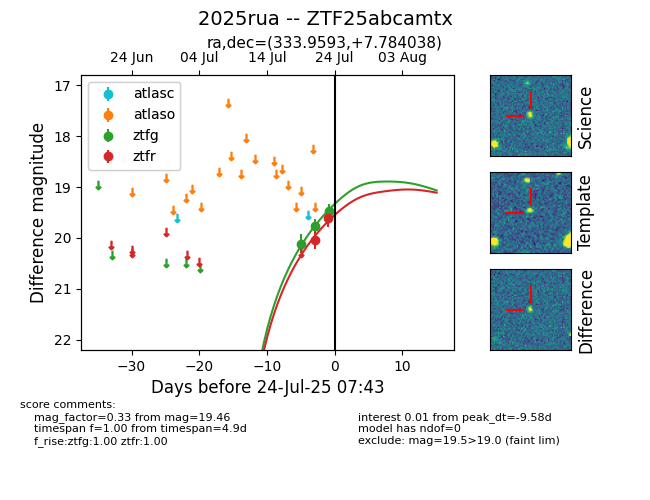

Target ZTF25abcamtx at 2025-07-24 07:43, see:
FINK: fink-portal.org/ZTF25abcamtx
Lasair: lasair-ztf.lsst.ac.uk/objects/ZTF25abcamtx
ALeRCE: alerce.online/object/ZTF25abcamtx
TNS: wis-tns.org/object/2025rua
YSE: ziggy.ucolick.org/yse/transient_detail/2025rua
alt names
ZTF25abcamtx (ztf,fink)
2025rua (tns,yse)
coordinates:
equatorial (ra, dec) = (333.9593,+7.78404)
galactic (l, b) = (70.1246,-38.64438)
photometry
last ztfg=19.46, ztfr=19.60
3 ztfg, 2 ztfr detections
